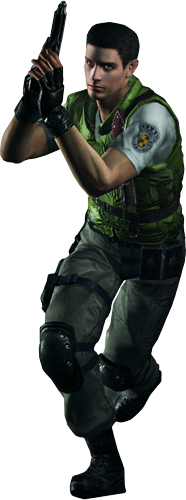

CHRIS REDFIELD
A former Air Force pilot, he joins the S.T.A.R.S. thanks to the recommendation of his old friend, Barry Burton. His keen sense for justice and duty to be done contrasts with his strong personality and explosive temper, which often gets him into trouble, especially with authorities and superiors. Chris is part of the Alpha Team and follows with his teammates in the rescue mission of the Bravo Team in the Raccoon Forest region.
